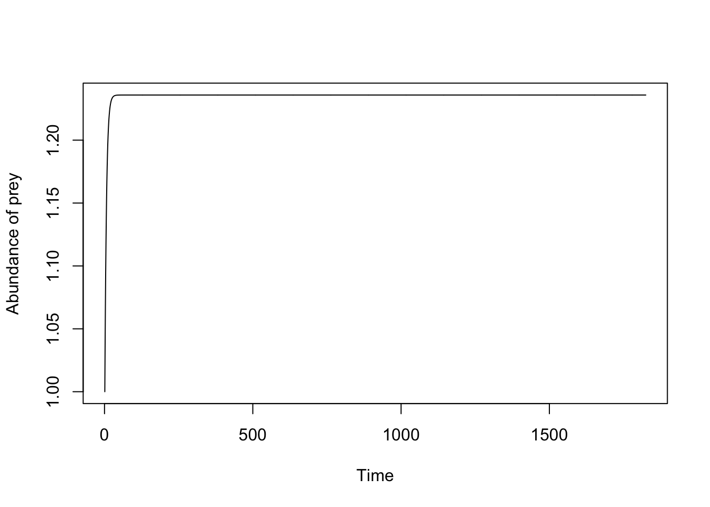

LV_prey_pred <- function(t, state, param) {
}7 Solving the differential equations
For simple ODES, we are able to solve it analytically. For example, for the continuous form of population growth we have:
\[\frac{dN}{dt} = rN(t), \]
and when we solve it:
\[ N(t) = N_0 e^{rt}. \]
But the problem is that for many complex ecological models, we are not able to solve them analytically — we can only solve them by numerical simulation! How do we solve differential equations? Remember the earlier method with the discrete model? Well, that only works because we are working in discrete time (each time step is a day). But when we work in continuous time, we are working in the infinitesimal — think of the smallest unit of time you can imagine, and now imagine all the time smaller than that. So we need to think of a method to project forward. I’m going to show you the simplest method, which is called the Euler method.
7.1 Euler method
The Euler method is one way to approximate the solved form of the differential equation. It involves calculating at a predetermined time-step which we call \(h\). And like the discrete population growth model that we worked with, the equation is so:
$$
$$
7.2 All this work, but Euler method isn’t great!
So generally, the Euler method isn’t very accurate and can be very slow because for it to be accurate, there’s need to be small time-steps and that can be computationally really intensive. So there’s other methods- one that is very common is called Runge-Kutta though the default for the package we’re using uses LSODA. I think you need to be aware of the names.
7.3 Using deSolve
For a lot of differential equation solving, we use the oldest package called deSolve. This package is very formulaic in what it gives you, you need to give it a function where the output is the derivatives at a time. So generally, we have three inputs: timestep (t), parameters (param), and the variables that will be changing (state).
and let’s fill it:
LV_prey_pred <- function(t, state, param) {
with(as.list(c(state, param)), {
dV <- (r * V) - (b * V * P)
dP <- (a * b * V * P) - mu * P
return(list(c(V = dV, P = dP)))
})
}So this is the model function ourself, but remember when we’re solving a differential equation what do we need: (1) how long to run the model, (2) what are the parameter values and (3) what is the initial abundance? For time, how about we look at 5 years?
times <- 1:(365 * 5) # 5 yearsAnd for parameters, we need to think about the rates and that everything would be in time. The model itself is agnostic to time, nothing about the model formulation would change if we want to work in terms of a month or a year, only the rates which we would have to convert.
param <- c(r= 1, b = 0.02, a = 0.5, mu = 0.2)and the states are:
states <- c(V = 1,P = 2)lv_results <- ode(y = states, times = times, func = LV_prey_pred, parms = param)
head(lv_results, 10) time V P
[1,] 1 1.00000000 2.000000
[2,] 2 2.62085998 1.665226
[3,] 3 6.90863176 1.425013
[4,] 4 18.27762397 1.311295
[5,] 5 48.35844067 1.462670
[6,] 6 126.56372216 2.703989
[7,] 7 300.08735342 17.260930
[8,] 8 111.03698385 231.692474
[9,] 9 1.71795304 248.082152
[10,] 10 0.05126931 204.020707See you can see the data.frame that includes the time as well as the total abundnace of the prey and predator.
The default solver in deSolve is called LSODA
If you don’t define a method in deSolve, it goes to LSODA which switches between two solvers! I think it’s worth knowing what the names are BUT it can be a fun read to figure out how they do the algorithim.
7.4 Checking the code
As you start having more complex models, you have to be on the look out for errors. We’re all humans, we all make mistakes! One thing we can do is to make situations where we know what the answers will be. This involves turning on and off the flow of water as I call it, or what I call leak checking. For example. If there are no births of the prey, we would expect that the population should monotonically decrease. For example, let’s say I made this really silly mistake:
LV_prey_pred_mistake <- function(t, state, param) {
with(as.list(c(state, param)), {
dV <- (r * V) + (b * V * P) # The number of prey increases... with predation
dP <- (a * b * V * P) - mu * P
return(list(c(V = dV, P = dP)))
})
}Sometimes, you will have situations where you accidentally use the wrong plus or minus sign! For example, instead of \(rV - bVP\), we used \(rv + bVP\) which would mean that the population of hares increase if they’re being eaten! When you have more complex models with more state variables, you might not catch this so easily so we should set up test-cases! For example, one way I would have caught it is if I assume that there is no births and only predatation. This means that the population would be monotically decreasing.
param_no_b <- param
param_no_b["r"] <- 0lv_test_no_b <- data.frame(ode(y = states, times = times, func = LV_prey_pred_mistake, parms = param_no_b))plot(lv_test_no_b[,"V"], type = 'l',xlab = "Time", ylab = "Abundance of prey")
Suspicious! The fact that the population is increasing must mean that we wrote the equation wrong. These are the ways we test models: we make up scenarios such as turning off birth and/or death to ensure we have the same number of individuals.